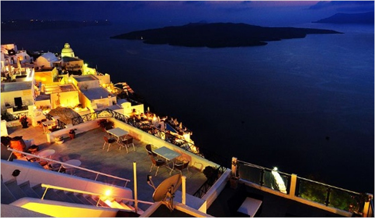

最新 The latest
景点概述：
圣米纳街（Agiou Mina）是从费拉（Fira）向伊莫洛维里小镇（Imerovigli）方向延伸的一条滨海建造的步道步行一趟大约需要一小时，左侧是蔚蓝迷人的爱
琴海，右侧是鳞次栉比的小店。步道沿途还处处可见圣托里尼峭壁屋舍的独特风光，如果你是摄影爱好者，这里有可能是绝佳的大片取景地。每当夕阳西下，
华灯初上，圣米纳街所在的费拉便有如一座辉煌璀璨的黄金城。这里有整个圣托里尼岛上最美的落日风景，如果能牵着恋人的手，吹着爱琴海上的风，漫步在
夕阳金色余晖下，会是最浪漫的事情。

其它:
在缆车站下面是看费拉夜景和小镇全景的好去处。每当夕阳西下，华灯初上，费拉便有如一座辉煌璀璨的黄金城。 （时光 提供）
待日落之后，再回到这里看灯火通明的夜景，异常美丽。 （时光 提供）
看日落的最佳地点，正对着中华大饭店，靠近缆车排队处。下面港口停泊着大小船只，还有仿古式帆船。 （时光 提供）
沿途有许多设计别致的酒店，处处可见圣托里尼峭壁屋舍的独特风光，非常值得一走再走，一路处处是景，你就狂拍吧！ （时光 提供）
徒步大都是从费拉到伊亚方向，因为前者地势上比后者高很多，这个方向走比较省力省时。 （时光 提供）